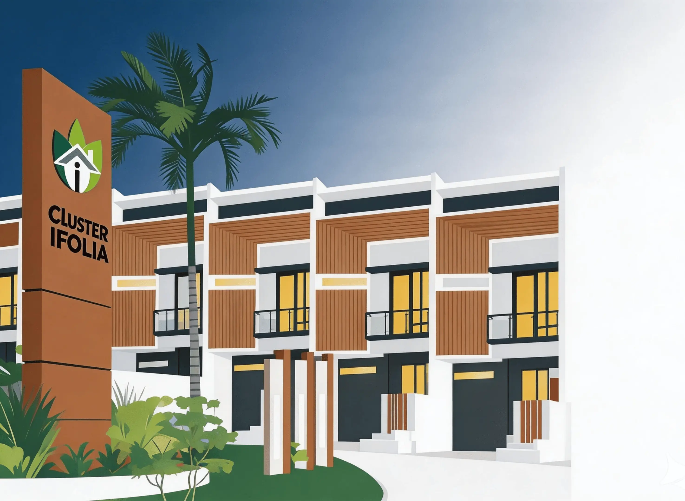

8+
Modul operasional
Warga, unit, IPL, keuangan, surat, keamanan, agenda, dan aduan.
Ifolia adalah platform web admin dan PWA warga untuk mengelola data penghuni, IPL, kas paguyuban, surat menyurat, aduan, keamanan, jadwal satpam, dan notifikasi Telegram dalam satu sistem.

Warga, unit, IPL, keuangan, surat, keamanan, agenda, dan aduan.
Admin/pengurus, warga, dan petugas operasional dengan hak akses berbeda.
Tampilan warga disiapkan agar nyaman dipakai dari handphone.
Surat final dapat dicek keasliannya melalui QR verifikasi.
Setiap modul dibuat untuk mengurangi proses manual pengurus cluster dan membuat warga bisa memantau layanan dari portal.
Data warga, keluarga, unit rumah, kendaraan, dokumen, arsip, dan status penghuni.
Tagihan bulanan, validasi pembayaran, kas paguyuban, hutang/piutang, dan laporan.
Permohonan warga, proses pengurus, pembuatan surat, TTD digital, dan export PDF/JPG.
Jadwal petugas, log keamanan, laporan tamu, dan pemisahan role operasional.
Pengumuman, agenda, kontak pengurus, laporan warga, dan monitoring tindak lanjut.
Bot untuk notifikasi operasional seperti tagihan, surat, dan informasi cluster.
Flow dibuat agar warga, sekretaris, ketua, dan penandatangan bisa melihat status yang sama tanpa membuat arsip liar.
Warga memilih jenis surat dan mengisi keperluan melalui PWA.
Sekretaris/Ketua RT memproses, memberi catatan, atau koreksi jenis surat.
Surat keluar dibuat dari data permohonan agar monitoring tetap tersambung.
Penandatangan menyetujui, warga mengunduh PDF/JPG, QR dapat diverifikasi.
Project ini menunjukkan kemampuan full-stack end-to-end: analisis kebutuhan, desain workflow, backend API, frontend PWA, database, integrasi Telegram, export dokumen, dan deployment.
Frontend Vue 3, backend NestJS, Prisma/PostgreSQL, dan service OCR.
Akses dipisah untuk admin, pengurus, warga, bendahara, satpam, dan penanggung jawab.
Preview surat menjadi sumber export PDF/JPG supaya tampilan dokumen konsisten.
Memperhatikan env, storage, deploy script, privacy, logging, dan data integrity.
Stack dipilih pragmatis untuk web admin, PWA warga, API modular, dan workflow operasional.
Untuk demo aplikasi asli, gunakan akun demo dan database dummy agar data warga tetap aman. Portfolio ini hanya menjelaskan scope, workflow, dan nilai teknis.